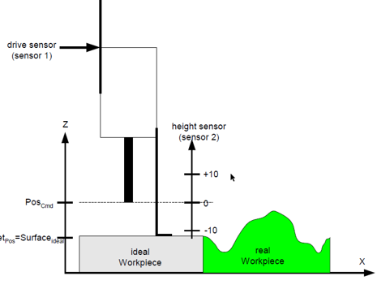
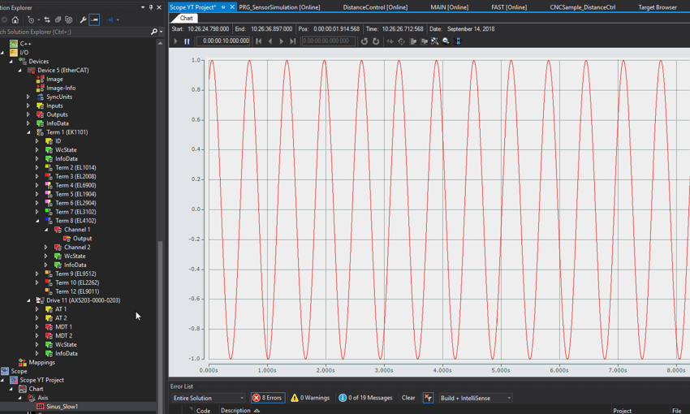
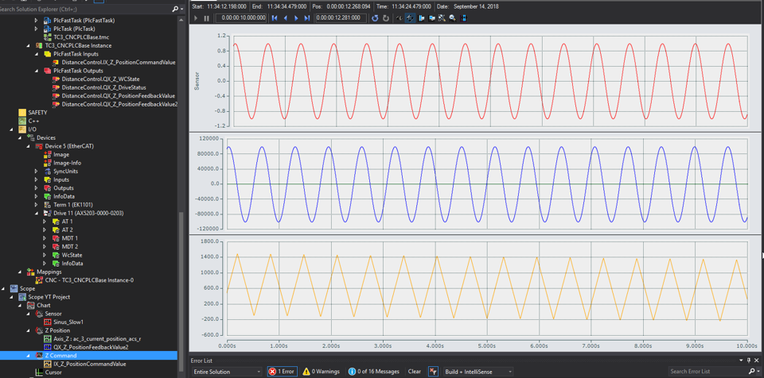

CNC Distance Control
Concept

- Use the height sensor value (EL3102 Ch1) as the 2nd feedback value for Z axis
- Add Parameter S-0-0053 Position Feedback value 2 (external feedback) for Z axis in AX5000
Simulation
-
Add Parameter S-0-0053 Position Feedback value 2 (external feedback) for Z axis in AX5000
-
Add the below parameters to Z axis
# Distance Control lr_hw[1].encoder_resolution_num 1 lr_hw[1].encoder_resolution_denom 1 lr_hw[1].vz_istw 0 lr_hw[1].mode_act_pos 0 lr_param.distance_control_on 1 kenngr.distc.n_cycles 5 # Zyklenzahl, Mittelwertfilter des Tastgebers kenngr.distc.max_deviation 5000000 # [0.1um] Max. zulaessige Abweichung kenngr.distc.v_max 500 # [um/s] Max. Geschw. der Abstandsregelung kenngr.distc.a_max 100 # [mm/s*s] Max. Beschleunigung kenngr.distc.max_act_value_change 50000000 # Max. Istwertsprung / Zyklus kenngr.distc.ref_offset 0 # Offset Referenzpunkt kenngr.distc.max_pos 20000 # [0.1um] Max. Position kenngr.distc.min_pos -20000 # [0.1um] Min. Position kenngr.distc.tolerance 0 # [0.1um] Toleranzwert der Tasttiefe kenngr.distc.check_sw_limit_switch 1 # Offset der Abstandsregelung überwachen kenngr.distc.optimized_scheduling 1 # Opt. Scheduling aktiv kenngr.distc.mode_dist_use_both_encoder 1 # Motor und Abstandsgeber aktiv -
Import DistanceControl.xml : GVL declaration
-
Import PRG_DistanceControl.xml : logic of Distance Control implementation
-
Import PRG_DriveSim.xml : AX5000 Drive Simulation for Status Word, Feedback, Position and WcState
-
Import PRG_SensorSimulation.xml : Height Sensor Signal Simulation (Sin Wave Signal)
- M91 : Start the height sensor simulation
-
M90 : Stop the height sensor simulation
-
create M90, M91 commands in channel parameter
m_synch[90] 0x00000002 ( MVS_SVS m_synch[91] 0x00000002 ( MVS_SVS -
Or use PLC variables bStart and bStop to start/stop the Sin Signal

-
In Fast POU, add the below code for Distance Control Implementation
(* VAR Declaration *) fDistance: LREAL; bOn : BOOL; bOff : BOOL; (* Distance Control Functioanlity*) PRG_DriveSim(); PRG_SensorSimulation(); PRG_DistanceControl( bSimulation := TRUE, fSimSensorValue := Sinus_Slow1*10, nChanIdx:= 0, nHliAxisIdx:= 2, fDistance:= fDistance, nFunctionNoOn:= 80, nFunctionNoOff:= 81, bDistanceControlOn := bOn, bDistanceControlOff := bOff, dist_ctrl_state=> , dist_ctrl_position=> , dist_ctrl_distance=> , dist_ctrl_act_source=> , dist_ctrl_act_position=> , dist_ctrl_act_offset=> , dist_ctrl_act_distance=> ); -
add M80 and M81 for Distance Control ON and OFF
m_synch[80] 0x00000002 ( MVS_SVS Distance Control OFF m_synch[81] 0x00000002 ( MVS_SVS Distance Control ON -
Link DistanceControl.QX_Z_PositionFeedbackValue2 to Position feedback 2 value (external feedback)
-
Test G Programming : Distance Control Test.nc (Copy nc files to ..CNC\ folder in target IPC)
G0 X0 Y0 Z0 ;P1 = Maximaler Positionsoffset ;P2 = Obere Grenze des Sensor-Gebers ;P3 = Untere Grenze des Sensor-Gebers ;P4 = Endschalter Pos ;P5 = Endschalter Neg ;P6 = M-Funkt Abstandsregelung Aus ;P7 = M-Funkt Abstandsregelung Ein Z0 L CYCLE [NAME=DistControlOn.nc @P1=40 @P2=40 @P3=-40 @P4=40 @P5=-40 @P6=81 @P7=80] M91 G1 F3000 G1 Y40 F100 M90 L CYCLE [NAME=DistControlOff.nc @P6=81] M30-
DistControlOn.nc
M@P6 ; Dist Control OFF Z[DIST_CTRL OFF NO_MOVE] ; Dist Control OFF ;Maximum permissible correction value [0.1 µm] P-AXIS-00414 V.E.strDistControl = "kenngr.distc.max_deviation " + REAL_TO_STR[@P1*10000] #MACHINE DATA SYN [AX=Z AXPARAM=V.E.strDistControl] ;Sensor's high limit P-AXIS-00419 V.E.strDistControl = "kenngr.distc.max_pos " + REAL_TO_STR[@P2*10000] #MACHINE DATA SYN [AX=Z AXPARAM=V.E.strDistControl] ;Sensor's low limit P-AXIS-00420 V.E.strDistControl = "kenngr.distc.min_pos " + REAL_TO_STR[@P3*10000] #MACHINE DATA SYN [AX=Z AXPARAM=V.E.strDistControl] ;Soft Limit Switch Pos V.E.strDistControl = "kenngr.swe_pos " + REAL_TO_STR[@P4*10000] #MACHINE DATA SYN [AX=Z AXPARAM=V.E.strDistControl] ;Soft Limit Neg V.E.strDistControl = "kenngr.swe_neg " + REAL_TO_STR[@P5*10000] #MACHINE DATA SYN [AX=Z AXPARAM=V.E.strDistControl] M@P7 ;Dist Control ON M17 -
DistControlOff.nc
Z[DIST_CTRL OFF NO_MOVE] ; Dist Control OFF M17
-
